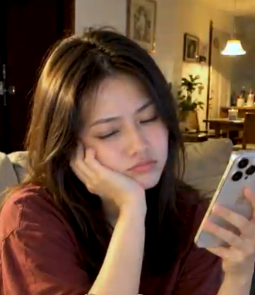
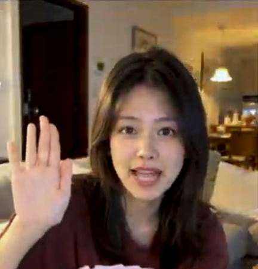

从疲惫倦怠到满血复活：学会情绪调节，用微小的日常生活仪式找回热忱与活力

在快节奏的职场与生活重压下，我们难免会遇到精神疲惫、提不起劲的时刻。懂得及时暂停、给心灵降噪，是现代人必须掌握的心理自我调适技能。
忙碌完一整天的工作后，年轻的自由撰稿人晓婷蜷缩在客厅温馨的沙发角落。她一手托着下巴，双眼微合，若有所思地看着手机屏幕。长期的屏幕阅读与连续创作让她感到了些许倦意，这让她开始反思：是时候给自己的身心放个假，进行一次深度放松了。
1. 快速摆脱精神疲惫、重焕神采的三个有效习惯
当感觉到精力被掏空时，不妨尝试以下三种简单而有效的自我关怀方式：
离线断网，专注呼吸： 暂时放下手机与电脑，闭上双眼进行深呼吸，感受当下的平静与放松。
适度拉伸，补充水分： 站起身来活动筋骨，喝一杯温开水，加速新陈代谢以舒缓身体肌肉紧张。
积极沟通，分享心情： 与亲朋好友打个招呼、聊聊日常，在温馨的互动中汲取情感支持与力量。

2. 状态切换：从自我疗愈中收获温暖与明朗笑容
经过短短十分钟的静心冥想与深呼吸，晓婷重新整理好情绪。她抬起头面对镜头，开心地举起右手挥手打招呼，嘴边绽放出明亮而热情的笑容，整个人焕发着蓬勃的朝气与自信。
晓婷笑着坦言：“允许自己偶尔疲惫，是走向成熟的第一步；而学会及时调整状态，则是热爱生活的最好证明。”通过微小的生活习惯调整，我们完全有能力掌控自己的情绪节奏，把充沛的正能量带给身边的每个人。
“允许自己短暂休息，是为了更有力地拥抱明天。当你学会对自己温柔以待，生活也会用微笑回应你。”
无论生活带给我们多少考验，只要我们拥有积极向上的心态与自我修复的能力，就一定能在平凡的日常中绽放出最耀眼的光彩。
总结
关注身心健康，接纳真实的自我。愿我们都能在劳逸结合中找到属于自己的最佳状态，带着阳光般灿烂的笑容，勇敢迎接生活中的每一次挑战。
本故事旨在分享情绪管理、自我关怀与积极健康的生活态度。